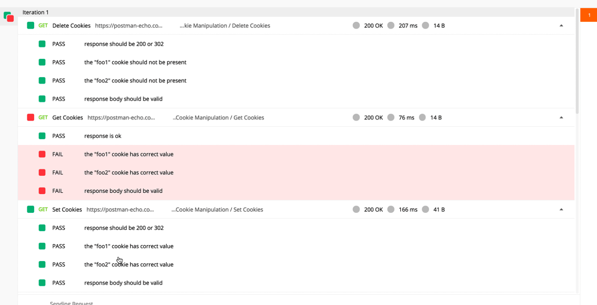
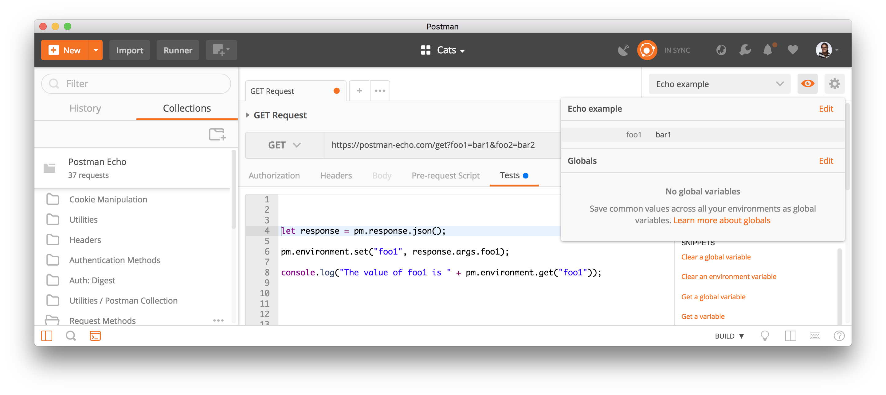

Designed and executed REST API test cases using Postman to validate CRUD operations, status codes, headers, authentication, response payloads, and JSON schema validation.
This project focuses on validating REST APIs using Postman by testing endpoints, request methods, response bodies, authentication, headers, and error handling.
The objective was to ensure backend services behave correctly under positive, negative, and edge-case scenarios.
API Endpoints
HTTP Methods
Validations
Response Validation
Every API request follows a structured validation process to ensure functionality, reliability, and data integrity.
Retrieve resource data.
Create new resources.
Update existing resources.
Remove resources.
Status • Headers • JSON
Comprehensive validation performed on REST API endpoints.
Validate successful retrieval of resources using GET requests.
Verify new resources are created with expected responses.
Verify updates are reflected correctly.
Ensure records are deleted successfully.
Validate secured endpoints using authentication tokens.
Validate response body structure and expected values.
Measure response time for API execution.
Validate HTTP status codes for every endpoint.
Complete API request collection used for execution.

Response body, headers, status codes and assertions.

Request and response header verification.
Command-line execution using Newman.